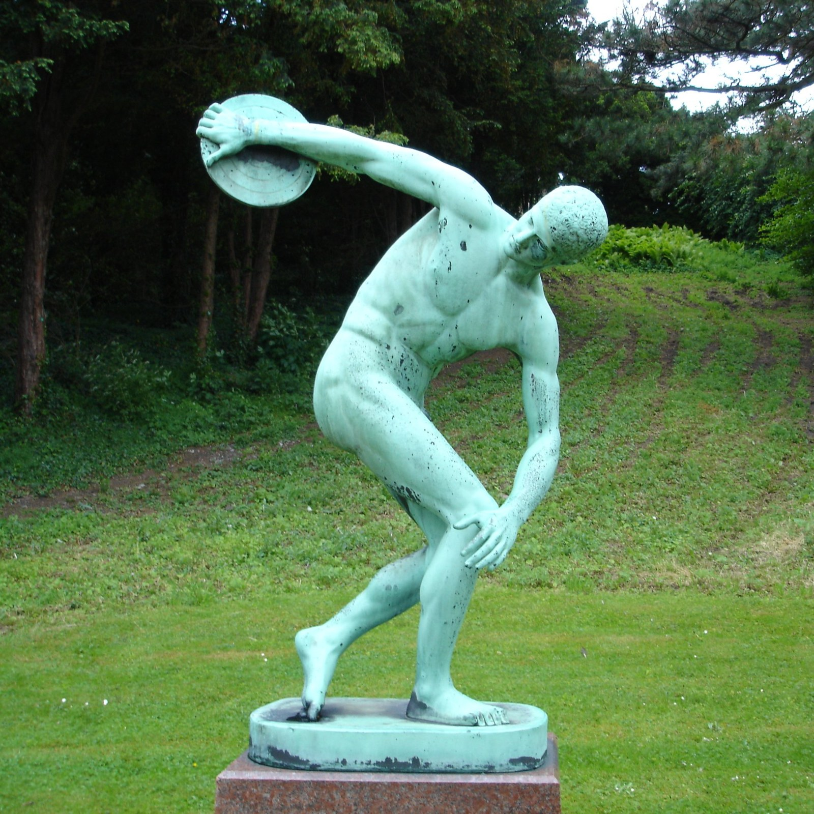

Súčasť päťboja
Hod diskom bol súčasťou antického olympijského päťboja v roku 708 pred naším letopočtom. Patrí tak k disciplínam, ktoré spájajú dnešnú atletiku s jej dávnymi koreňmi.
ZAUJÍMAVOSTI
Disciplína, ktorej príbeh siaha tisícročia do minulosti.
Hod diskom bol súčasťou antického olympijského päťboja v roku 708 pred naším letopočtom. Patrí tak k disciplínam, ktoré spájajú dnešnú atletiku s jej dávnymi koreňmi.
Známym symbolom disciplíny je Myrónov Diskobolos. Socha zachytáva športovca v okamihu prípravy na hod. Jej kópie pripomínajú, že športový pohyb bol aj témou umenia.
Dnešný hod diskom má presne určené náčinie a športovisko. Základná myšlienka však zostáva ľahko pochopiteľná: spojiť pohyb celého tela a poslať disk čo najďalej.
